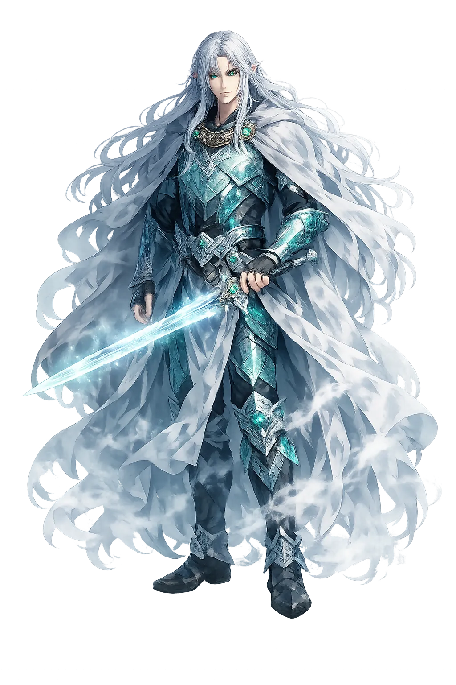
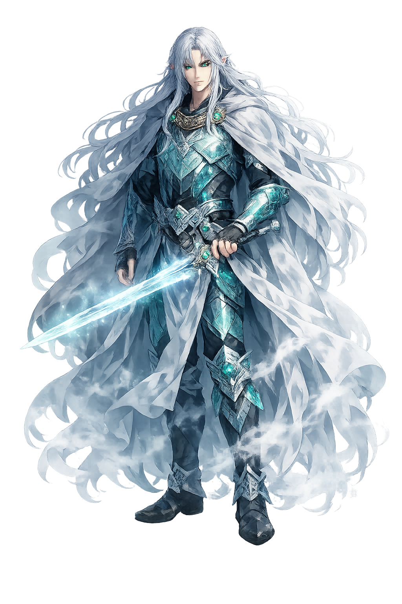

The Authentic Orthography
Sea, Otherworld, Mist · The Mist-Walker of the Sea

Unicode restoration and ASCII comparison
Manannán mac Lir
The name in its original Celtic form. Manannán (Manannán mac Lir) is attested in the source tradition — “Son of the sea (from Old Irish Manannán)”. Its acute stress marks carry the full phonetic and orthographic weight of the source tradition.
manannan
Reduced to plain manannan, the name loses everything that made it specific: acute stress marks. What remains is an ASCII string that machines can parse but that no longer speaks with its original voice.
Manannán
The Unicode restoration recovers what ASCII flattened. Manannán restores acute stress marks, returning the name to its original written dignity. The domain encodes to Punycode, but the browser displays the truth.
Manannán.com → xn--manannn-mwa.com
The non-ASCII characters in Manannán are encoded while the ASCII remains visible. To the DNS, it is Punycode. To humanity, it is Manannán.
How Manannán travels from ancient script to the modern URL
Irish Manannán, traditionally 'son of the sea' (mac Lir); the first element may connect to the Isle of Man.
Sea, otherworld, mist, and liminality; a guide between worlds.
The Unicode restoration Manannán uses the acute accent to mark the long final vowel; the ASCII form loses this length marker.
How Manannán was spoken
Guardian of the Irish Otherworld
Manannán mac Lir is the great sea god of Ireland and guardian of the Otherworld. He rules the waves, the weather, and the mist that separates the mortal island from the Land of Promise. A shape-shifter, navigator, and bestower of marvelous weapons, he appears in myth as helper, host, and boundary-keeper between this world and the next.
He commands the waters around Ireland and the weather that governs them.
The mist that hides Tír na nÓg and the Isles of the Blessed is his cloak.
He bestows weapons, cloaks, and horses on heroes who cross his path.
He moves between forms — rider, fisherman, beggar — to test or aid mortals.
Stories of Manannán
Manannán moves through Irish myth like the tide: now distant, now suddenly present, always connected to the boundary between worlds. He is not a creator or a warrior king but a guardian of passages — between islands, between life and death, between the known and the hidden.
In Immram Brain maic Febail, Manannán appears to Bran as he sails toward the Otherworld. From the god's perspective, the sea is a plain of flowers and the ships are chariots. He sings of the blessed lands beyond the wave and urges Bran onward. The poem makes him the poet of the threshold, the one who explains what mortals cannot yet see.
The Lebor Gabála Érenn ('Book of Invasions') describes Manannán as the one who raises a mist around the island of Tír Tairngire so that it cannot be found. He also governs the weather and the harvest, pouring silver showers on the fields. Here he is less a sea god in the maritime sense than a deity of the invisible boundary between Ireland and the Otherworld.
In the late tale Altram Tige Dá Medar, Manannán acts as foster-father to the children of the gods, including the Dagda's son Angus. He provides the sídhe mounds where the divine race dwells after mortal Ireland is given to human invaders. The story expands his role from sea guardian to provider of the Otherworld's real estate.
Manannán is the god of the horizon. He does not rule the land; he rules the mist that hides the land beyond the land. His gifts — the boat that needs no oars, the horse that runs on water, the sword that cannot be refused — are all instruments of passage.
Enter Extended Lore